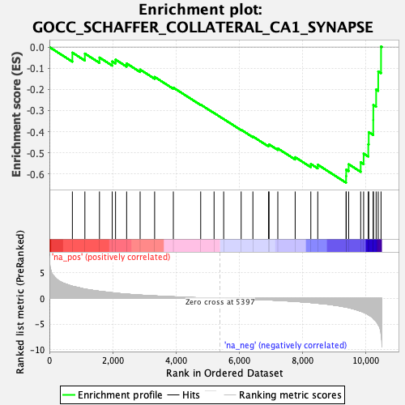
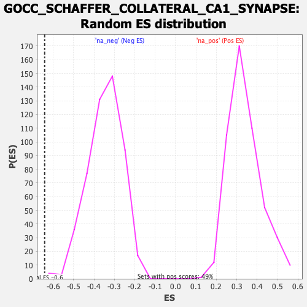

| Dataset | qlf.KOd4vsWTd4_gsea_score |
| Phenotype | NoPhenotypeAvailable |
| Upregulated in class | na_neg |
| GeneSet | GOCC_SCHAFFER_COLLATERAL_CA1_SYNAPSE |
| Enrichment Score (ES) | -0.6417616 |
| Normalized Enrichment Score (NES) | -1.8516625 |
| Nominal p-value | 0.003921569 |
| FDR q-value | 0.03019747 |
| FWER p-Value | 0.743 |

| SYMBOL | RANK IN GENE LIST | RANK METRIC SCORE | RUNNING ES | CORE ENRICHMENT | |
|---|---|---|---|---|---|
| 1 | ITGB1 | 726 | 2.358 | -0.0263 | No |
| 2 | DVL1 | 1121 | 1.814 | -0.0308 | No |
| 3 | NEFH | 1582 | 1.386 | -0.0495 | No |
| 4 | CTNNB1 | 1985 | 1.091 | -0.0680 | No |
| 5 | BCR | 2090 | 1.015 | -0.0594 | No |
| 6 | ACTG1 | 2441 | 0.835 | -0.0775 | No |
| 7 | PRKCI | 2867 | 0.642 | -0.1064 | No |
| 8 | NPTN | 3325 | 0.483 | -0.1412 | No |
| 9 | BSN | 3917 | 0.313 | -0.1919 | No |
| 10 | PPP3CA | 4781 | 0.109 | -0.2723 | No |
| 11 | STX3 | 5204 | 0.034 | -0.3120 | No |
| 12 | DTNBP1 | 5508 | -0.016 | -0.3406 | No |
| 13 | ACTB | 6060 | -0.108 | -0.3912 | No |
| 14 | FBXL20 | 6431 | -0.185 | -0.4232 | No |
| 15 | CAPZB | 6924 | -0.308 | -0.4645 | No |
| 16 | SLC30A1 | 6943 | -0.313 | -0.4605 | No |
| 17 | CDC42 | 7219 | -0.390 | -0.4796 | No |
| 18 | PFN2 | 7767 | -0.599 | -0.5209 | No |
| 19 | GIPC1 | 8262 | -0.824 | -0.5531 | No |
| 20 | ITPR1 | 8481 | -0.956 | -0.5564 | No |
| 21 | PRKCZ | 9376 | -1.704 | -0.6107 | Yes |
| 22 | FYN | 9380 | -1.708 | -0.5798 | Yes |
| 23 | CDK5 | 9458 | -1.811 | -0.5542 | Yes |
| 24 | BAIAP2 | 9838 | -2.491 | -0.5449 | Yes |
| 25 | SRGN | 9931 | -2.718 | -0.5041 | Yes |
| 26 | TUBB2B | 10078 | -3.187 | -0.4600 | Yes |
| 27 | ABR | 10092 | -3.222 | -0.4025 | Yes |
| 28 | SYP | 10235 | -3.894 | -0.3450 | Yes |
| 29 | NTNG2 | 10237 | -3.899 | -0.2740 | Yes |
| 30 | GABBR1 | 10326 | -4.469 | -0.2009 | Yes |
| 31 | PTPRA | 10392 | -5.042 | -0.1152 | Yes |
| 32 | AKAP12 | 10481 | -6.918 | 0.0026 | Yes |
